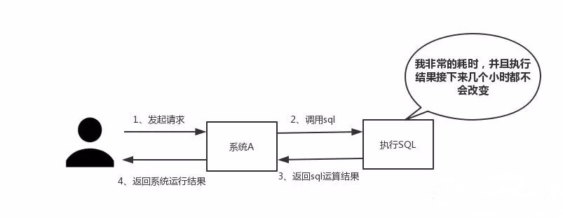
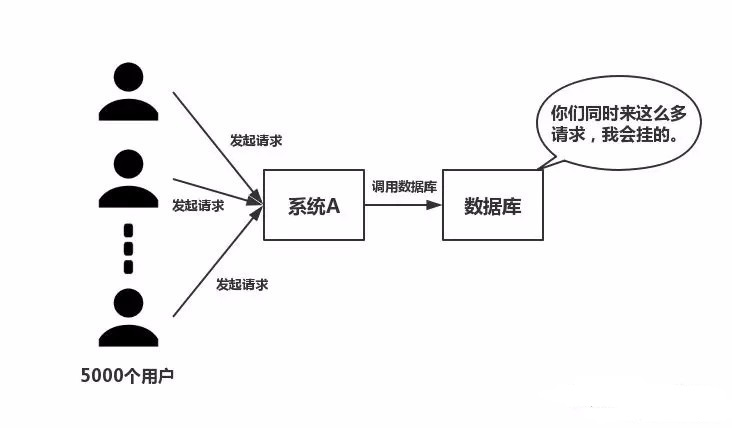
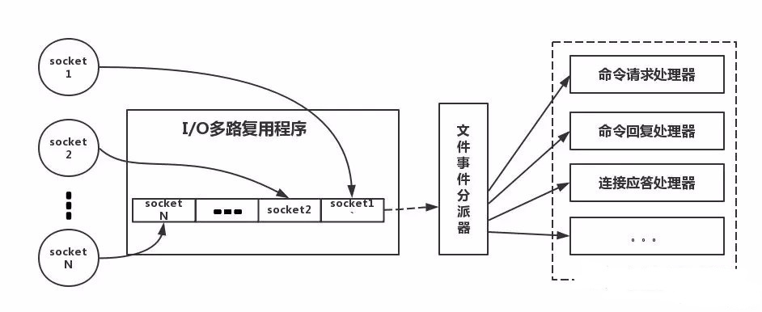

<!DOCTYPE html>
<html lang="zh-CN">
<head><meta name="generator" content="Hexo 3.8.0">

    <!--[if lt IE 9]>
        <style>body {display: none; background: none !important} </style>
        <meta http-equiv="Refresh" Content="0; url=//outdatedbrowser.com/" />
    <![endif]-->

<meta charset="utf-8">
<meta http-equiv="X-UA-Compatible" content="IE=edge, chrome=1">
<meta name="viewport" content="width=device-width, initial-scale=1, maximum-scale=1, user-scalable=no">
<meta name="format-detection" content="telephone=no">
<meta name="author" content="康兴华">


<meta name="description" content="为什么使用redis分析:博主觉得在项目中使用redis，主要是从两个角度去考虑:性能和并发。当然，redis还具备可以做分布式锁等其他功能，但是如果只是为了分布式锁这些其他功能，完全还有其他中间件(如zookpeer等)代替，并不是非要使用redis。因此，这个问题主要从性能和并发两个角度去答。">
<meta name="keywords" content="笔记">
<meta property="og:type" content="article">
<meta property="og:title" content="为什么分布式一定要有redis?">
<meta property="og:url" content="http://kxh.ink/2018/11/08/why-is-redis/index.html">
<meta property="og:site_name" content="康兴华">
<meta property="og:description" content="为什么使用redis分析:博主觉得在项目中使用redis，主要是从两个角度去考虑:性能和并发。当然，redis还具备可以做分布式锁等其他功能，但是如果只是为了分布式锁这些其他功能，完全还有其他中间件(如zookpeer等)代替，并不是非要使用redis。因此，这个问题主要从性能和并发两个角度去答。">
<meta property="og:locale" content="zh-CN">
<meta property="og:image" content="http://kxh.ink/2018/11/08/why-is-redis/19c2ad17bb3685a1316adbae40504edf.jpg">
<meta property="og:image" content="http://kxh.ink/2018/11/08/why-is-redis/a6670ab7b9d361ee8a05279ded8466f2.jpg">
<meta property="og:image" content="http://kxh.ink/2018/11/08/why-is-redis/2a42d47ab2597eca67444004727de6ee.jpg">
<meta property="og:updated_time" content="2018-11-08T11:06:08.358Z">
<meta name="twitter:card" content="summary">
<meta name="twitter:title" content="为什么分布式一定要有redis?">
<meta name="twitter:description" content="为什么使用redis分析:博主觉得在项目中使用redis，主要是从两个角度去考虑:性能和并发。当然，redis还具备可以做分布式锁等其他功能，但是如果只是为了分布式锁这些其他功能，完全还有其他中间件(如zookpeer等)代替，并不是非要使用redis。因此，这个问题主要从性能和并发两个角度去答。">
<meta name="twitter:image" content="http://kxh.ink/2018/11/08/why-is-redis/19c2ad17bb3685a1316adbae40504edf.jpg">

<link rel="apple-touch-icon" href="/apple-touch-icon.png">


    <link rel="alternate" href="/atom.xml" title="康兴华" type="application/atom+xml">


    <link rel="shortcut icon" href="/favicon.png">


    <link href="//cdn.bootcss.com/animate.css/3.5.1/animate.min.css" rel="stylesheet">


    <link href="//cdn.bootcss.com/fancybox/2.1.5/jquery.fancybox.min.css" rel="stylesheet">


    <script src="//cdn.bootcss.com/pace/1.0.2/pace.min.js"></script>
    <link href="//cdn.bootcss.com/pace/1.0.2/themes/blue/pace-theme-minimal.css" rel="stylesheet">


<link rel="stylesheet" href="/css/style.css">


<link href="//cdn.bootcss.com/font-awesome/4.6.3/css/font-awesome.min.css" rel="stylesheet">


<title>为什么分布式一定要有redis? | 康兴华</title>

<script src="//cdn.bootcss.com/jquery/2.2.4/jquery.min.js"></script>
<script src="//cdn.bootcss.com/clipboard.js/1.5.10/clipboard.min.js"></script>

<script>
    var yiliaConfig = {
        fancybox: true,
        animate: true,
        isHome: false,
        isPost: true,
        isArchive: false,
        isTag: false,
        isCategory: false,
        fancybox_js: "//cdn.bootcss.com/fancybox/2.1.5/jquery.fancybox.min.js",
        scrollreveal: "//cdn.bootcss.com/scrollReveal.js/3.1.4/scrollreveal.min.js",
        search: true
    }
</script>


    <script> yiliaConfig.jquery_ui = [false]; </script>


    <script> yiliaConfig.rootUrl = "\/";</script>


</head></html>
<body>
  <div id="container">
    <div class="left-col">
    <div class="overlay"></div>
<div class="intrude-less">
    <header id="header" class="inner">
        <a href="/" class="profilepic">
            
        </a>
        <hgroup>
          <h1 class="header-author"><a href="/">康兴华</a></h1>
        </hgroup>

        

        
            <form id="search-form">
            <input type="text" id="local-search-input" name="q" placeholder="search..." class="search form-control" autocomplete="off" autocorrect="off" searchonload="true">
            <i class="fa fa-times" onclick="resetSearch()"></i>
            </form>
            <div id="local-search-result"></div>
            <p class="no-result">No results found <i class="fa fa-spinner fa-pulse"></i></p>
        


        
            <div id="switch-btn" class="switch-btn">
                <div class="icon">
                    <div class="icon-ctn">
                        <div class="icon-wrap icon-house" data-idx="0">
                            <div class="birdhouse"></div>
                            <div class="birdhouse_holes"></div>
                        </div>
                        <div class="icon-wrap icon-ribbon hide" data-idx="1">
                            <div class="ribbon"></div>
                        </div>
                        
                        <div class="icon-wrap icon-link hide" data-idx="2">
                            <div class="loopback_l"></div>
                            <div class="loopback_r"></div>
                        </div>
                        
                        
                        <div class="icon-wrap icon-me hide" data-idx="3">
                            <div class="user"></div>
                            <div class="shoulder"></div>
                        </div>
                        
                    </div>
                    
                </div>
                <div class="tips-box hide">
                    <div class="tips-arrow"></div>
                    <ul class="tips-inner">
                        <li>菜单</li>
                        <li>标签</li>
                        
                        <li>友情链接</li>
                        
                        
                        <li>关于我</li>
                        
                    </ul>
                </div>
            </div>
        

        <div id="switch-area" class="switch-area">
            <div class="switch-wrap">
                <section class="switch-part switch-part1">
                    <nav class="header-menu">
                        <ul>
                        
                            <li><a href="/">主页</a></li>
                        
                            <li><a href="/archives/">所有文章</a></li>
                        
                            <li><a href="/tags/">标签云</a></li>
                        
                            <li><a href="/about/">关于我</a></li>
                        
                        </ul>
                    </nav>
                    <nav class="header-nav">
                        <ul class="social">
                            
                                <a class="fa Email" href="mailto:kangxinghua@gmail.com" title="Email"></a>
                            
                                <a class="fa GitHub" href="https://github.com/kangxinghua" title="GitHub"></a>
                            
                                <a class="fa RSS" href="/atom.xml" title="RSS"></a>
                            
                        </ul>
                    </nav>
                </section>
                
                
                <section class="switch-part switch-part2">
                    <div class="widget tagcloud" id="js-tagcloud">
                        <ul class="tag-list"><li class="tag-list-item"><a class="tag-list-link" href="/tags/Java-并发编程实战/">Java 并发编程实战</a></li><li class="tag-list-item"><a class="tag-list-link" href="/tags/笔记/">笔记</a></li></ul>
                    </div>
                </section>
                
                
                
                <section class="switch-part switch-part3">
                    <div id="js-friends">
                    
                      <a class="main-nav-link switch-friends-link" href="https://hexo.io">Hexo</a>
                    
                      <a class="main-nav-link switch-friends-link" href="https://pages.github.com/">GitHub</a>
                    
                      <a class="main-nav-link switch-friends-link" href="http://moxfive.xyz/">MOxFIVE</a>
                    
                    </div>
                </section>
                

                
                
                <section class="switch-part switch-part4">
                
                    <div id="js-aboutme">专注于前端</div>
                </section>
                
            </div>
        </div>
    </header>                
</div>
    </div>
    <div class="mid-col">
      <nav id="mobile-nav">
      <div class="overlay">
          <div class="slider-trigger"></div>
          <h1 class="header-author js-mobile-header hide"><a href="/" title="回到主页">康兴华</a></h1>
      </div>
    <div class="intrude-less">
        <header id="header" class="inner">
            <a href="/" class="profilepic">
                
            </a>
            <hgroup>
              <h1 class="header-author"><a href="/" title="回到主页">康兴华</a></h1>
            </hgroup>
            
            <nav class="header-menu">
                <ul>
                
                    <li><a href="/">主页</a></li>
                
                    <li><a href="/archives/">所有文章</a></li>
                
                    <li><a href="/tags/">标签云</a></li>
                
                    <li><a href="/about/">关于我</a></li>
                
                <div class="clearfix"></div>
                </ul>
            </nav>
            <nav class="header-nav">
                        <ul class="social">
                            
                                <a class="fa Email" target="_blank" href="mailto:kangxinghua@gmail.com" title="Email"></a>
                            
                                <a class="fa GitHub" target="_blank" href="https://github.com/kangxinghua" title="GitHub"></a>
                            
                                <a class="fa RSS" target="_blank" href="/atom.xml" title="RSS"></a>
                            
                        </ul>
            </nav>
        </header>                
    </div>
    <link class="menu-list" tags="标签" friends="友情链接" about="关于我">
</nav>
      <div class="body-wrap"><article id="post-why-is-redis" class="article article-type-post" itemscope="" itemprop="blogPost">
  
    <div class="article-meta">
      <a href="/2018/11/08/why-is-redis/" class="article-date">
      <time datetime="2018-11-08T03:09:21.000Z" itemprop="datePublished">2018-11-08</time>
</a>


    </div>
  
  <div class="article-inner">
    
      <input type="hidden" class="isFancy">
    
    
      <header class="article-header">
        
  
    <h1 class="article-title" itemprop="name">
      为什么分布式一定要有redis?
    </h1>
  

      </header>
      
      <div class="article-info article-info-post">
        

        
    <div class="article-tag tagcloud">
        <ul class="article-tag-list"><li class="article-tag-list-item"><a class="article-tag-list-link" href="/tags/笔记/">笔记</a></li></ul>
    </div>

        <div class="clearfix"></div>
      </div>
      
    
    <div class="article-entry" itemprop="articleBody">
      
          
        <h2 id="为什么使用redis"><a href="#为什么使用redis" class="headerlink" title="为什么使用redis"></a>为什么使用redis</h2><p><strong>分析</strong>:博主觉得在项目中使用redis，主要是从两个角度去考虑:性能和并发。当然，redis还具备可以做分布式锁等其他功能，但是如果只是为了分布式锁这些其他功能，完全还有其他中间件(如zookpeer等)代替，并不是非要使用redis。因此，这个问题主要从性能和并发两个角度去答。</p>
<a id="more"></a>
<p><strong>回答:如下所示，分为两点</strong></p>
<h3 id="性能"><a href="#性能" class="headerlink" title="性能"></a>性能</h3><p>如下图所示，我们在碰到需要执行耗时特别久，且结果不频繁变动的SQL，就特别适合将运行结果放入缓存。这样，后面的请求就去缓存中读取，使得请求能够迅速响应。</p>
<p></p>
<p>题外话：忽然想聊一下这个迅速响应的标准。其实根据交互效果的不同，这个响应时间没有固定标准。不过曾经有人这么告诉我:”在理想状态下，我们的页面跳转需要在瞬间解决，对于页内操作则需要在刹那间解决。另外，超过一弹指的耗时操作要有进度提示，并且可以随时中止或取消，这样才能给用户最好的体验。”</p>
<p>那么瞬间、刹那、一弹指具体是多少时间呢？</p>
<p>根据《摩诃僧祗律》记载</p>
<p>一刹那者为一念，二十念为一瞬，二十瞬为一弹指，二十弹指为一罗预，二十罗预为一须臾，一日一夜有三十须臾。</p>
<p>那么，经过周密的计算，一瞬间为0.36 秒,一刹那有 0.018 秒.一弹指长达 7.2 秒。</p>
<h3 id="并发"><a href="#并发" class="headerlink" title="并发"></a>并发</h3><p>如下图所示，在大并发的情况下，所有的请求直接访问数据库，数据库会出现连接异常。这个时候，就需要使用redis做一个缓冲操作，让请求先访问到redis，而不是直接访问数据库。</p>
<p></p>
<h2 id="使用redis有什么缺点"><a href="#使用redis有什么缺点" class="headerlink" title="使用redis有什么缺点"></a>使用redis有什么缺点</h2><p><strong>分析:</strong> 大家用redis这么久，这个问题是必须要了解的，基本上使用redis都会碰到一些问题，常见的也就几个。</p>
<p>回答:主要是四个问题</p>
<ul>
<li>缓存和数据库双写一致性问题</li>
<li>缓存雪崩问题</li>
<li>缓存击穿问题</li>
<li>缓存的并发竞争问题</li>
</ul>
<p>这四个问题，我个人是觉得在项目中，比较常遇见的，具体解决方案，后文给出。</p>
<h2 id="单线程的redis为什么这么快"><a href="#单线程的redis为什么这么快" class="headerlink" title="单线程的redis为什么这么快"></a>单线程的redis为什么这么快</h2><p><strong>分析:</strong> 这个问题其实是对redis内部机制的一个考察。其实根据博主的面试经验，很多人其实都不知道redis是单线程工作模型。所以，这个问题还是应该要复习一下的。</p>
<p>回答:主要是以下三点</p>
<ul>
<li>纯内存操作</li>
<li>单线程操作，避免了频繁的上下文切换</li>
<li>采用了非阻塞I/O多路复用机制</li>
</ul>
<p><strong>题外话：</strong> 我们现在要仔细的说一说I/O多路复用机制，因为这个说法实在是太通俗了，通俗到一般人都不懂是什么意思。博主打一个比方：小曲在S城开了一家快递店，负责同城快送服务。小曲因为资金限制，雇佣了一批快递员，然后小曲发现资金不够了，只够买一辆车送快递。</p>
<p><strong>经营方式一</strong><br>客户每送来一份快递，小曲就让一个快递员盯着，然后快递员开车去送快递。慢慢的小曲就发现了这种经营方式存在下述问题</p>
<p>几十个快递员基本上时间都花在了抢车上了，大部分快递员都处在闲置状态，谁抢到了车，谁就能去送快递<br>随着快递的增多，快递员也越来越多，小曲发现快递店里越来越挤，没办法雇佣新的快递员了<br>快递员之间的协调很花时间<br>综合上述缺点，小曲痛定思痛，提出了下面的经营方式</p>
<p><strong>经营方式二</strong></p>
<p>小曲只雇佣一个快递员。然后呢，客户送来的快递，小曲按送达地点标注好，然后依次放在一个地方。最后，那个快递员依次的去取快递，一次拿一个，然后开着车去送快递，送好了就回来拿下一个快递。</p>
<p><strong>对比</strong><br>上述两种经营方式对比，是不是明显觉得第二种，效率更高，更好呢。在上述比喻中:</p>
<p>每个快递员———-&gt;每个线程<br>每个快递————&gt;每个socket(I/O流)<br>快递的送达地点——&gt;socket的不同状态<br>客户送快递请求——&gt;来自客户端的请求<br>小曲的经营方式——&gt;服务端运行的代码<br>一辆车—————&gt;CPU的核数</p>
<p><strong>于是我们有如下结论</strong><br>1、经营方式一就是传统的并发模型，每个I/O流(快递)都有一个新的线程(快递员)管理。<br>2、经营方式二就是I/O多路复用。只有单个线程(一个快递员)，通过跟踪每个I/O流的状态(每个快递的送达地点)，来管理多个I/O流。</p>
<p>下面类比到真实的redis线程模型，如图所示</p>
<p></p>
<p>参照上图，简单来说，就是。我们的redis-client在操作的时候，会产生具有不同事件类型的socket。在服务端，有一段I/0多路复用程序，将其置入队列之中。然后，文件事件分派器，依次去队列中取，转发到不同的事件处理器中。</p>
<p>需要说明的是，这个I/O多路复用机制，redis还提供了select、epoll、evport、kqueue等多路复用函数库，大家可以自行去了解。</p>
<h2 id="redis的数据类型，以及每种数据类型的使用场景"><a href="#redis的数据类型，以及每种数据类型的使用场景" class="headerlink" title="redis的数据类型，以及每种数据类型的使用场景"></a>redis的数据类型，以及每种数据类型的使用场景</h2><p><strong>分析：</strong> 是不是觉得这个问题很基础，其实我也这么觉得。然而根据面试经验发现，至少百分八十的人答不上这个问题。建议，在项目中用到后，再类比记忆，体会更深，不要硬记。基本上，一个合格的程序员，五种类型都会用到。</p>
<ul>
<li><strong>String</strong></li>
</ul>
<blockquote>
<p>这个其实没啥好说的，最常规的set/get操作，value可以是String也可以是数字。一般做一些复杂的计数功能的缓存</p>
</blockquote>
<ul>
<li><strong>Hash</strong> </li>
</ul>
<blockquote>
<p>这里value存放的是结构化的对象，比较方便的就是操作其中的某个字段。博主在做单点登录的时候，就是用这种数据结构存储用户信息，以cookieId作为key，设置30分钟为缓存过期时间，能很好的模拟出类似session的效果。</p>
</blockquote>
<ul>
<li><strong>List</strong></li>
</ul>
<blockquote>
<p>使用List的数据结构，可以做简单的消息队列的功能。另外还有一个就是，可以利用lrange命令，做基于redis的分页功能，性能极佳，用户体验好。</p>
</blockquote>
<ul>
<li><strong>Set</strong></li>
</ul>
<blockquote>
<p>因为set堆放的是一堆不重复值的集合。所以可以做全局去重的功能。为什么不用JVM自带的Set进行去重？因为我们的系统一般都是集群部署，使用JVM自带的Set，比较麻烦，难道为了一个做一个全局去重，再起一个公共服务，太麻烦了。</p>
</blockquote>
<p>另外，就是利用交集、并集、差集等操作，可以计算共同喜好，全部的喜好，自己独有的喜好等功能。</p>
<ul>
<li><strong>sorted set</strong></li>
</ul>
<blockquote>
<p>sorted set多了一个权重参数score,集合中的元素能够按score进行排列。可以做排行榜应用，取TOP N操作。sorted set可以用来做延时任务。最后一个应用就是可以做范围查找。</p>
</blockquote>
<h2 id="redis的过期策略以及内存淘汰机制"><a href="#redis的过期策略以及内存淘汰机制" class="headerlink" title="redis的过期策略以及内存淘汰机制"></a>redis的过期策略以及内存淘汰机制</h2><p><strong>分析:</strong> 这个问题其实相当重要，到底redis有没用到家，这个问题就可以看出来。比如你redis只能存5G数据，可是你写了10G，那会删5G的数据。怎么删的，这个问题思考过么？还有，你的数据已经设置了过期时间，但是时间到了，内存占用率还是比较高，有思考过原因么?</p>
<p><strong>回答:</strong><br>redis采用的是定期删除+惰性删除策略。</p>
<p><strong>为什么不用定时删除策略?</strong><br>定时删除,用一个定时器来负责监视key,过期则自动删除。虽然内存及时释放，但是十分消耗CPU资源。在大并发请求下，CPU要将时间应用在处理请求，而不是删除key,因此没有采用这一策略.</p>
<p><strong>定期删除+惰性删除是如何工作的呢?</strong><br>定期删除，redis默认每个100ms检查，是否有过期的key,有过期key则删除。需要说明的是，redis不是每个100ms将所有的key检查一次，而是随机抽取进行检查(如果每隔100ms,全部key进行检查，redis岂不是卡死)。因此，如果只采用定期删除策略，会导致很多key到时间没有删除。</p>
<p>于是，惰性删除派上用场。也就是说在你获取某个key的时候，redis会检查一下，这个key如果设置了过期时间那么是否过期了？如果过期了此时就会删除。</p>
<p><strong>采用定期删除+惰性删除就没其他问题了么?</strong><br>不是的，如果定期删除没删除key。然后你也没即时去请求key，也就是说惰性删除也没生效。这样，redis的内存会越来越高。那么就应该采用内存淘汰机制。</p>
<p>在redis.conf中有一行配置</p>
<p><strong>maxmemory-policy volatile-lru</strong></p>
<p>该配置就是配内存淘汰策略的(什么，你没配过？好好反省一下自己)</p>
<ul>
<li>noeviction：当内存不足以容纳新写入数据时，新写入操作会报错。应该没人用吧。</li>
<li>allkeys-lru：当内存不足以容纳新写入数据时，在键空间中，移除最近最少使用的key。推荐使用，目前项目在用这种。</li>
<li>allkeys-random：当内存不足以容纳新写入数据时，在键空间中，随机移除某个key。应该也没人用吧，你不删最少使用Key,去随机删。</li>
<li>volatile-lru：当内存不足以容纳新写入数据时，在设置了过期时间的键空间中，移除最近最少使用的key。这种情况一般是把redis既当缓存，又做持久化存储的时候才用。不推荐</li>
<li>volatile-random：当内存不足以容纳新写入数据时，在设置了过期时间的键空间中，随机移除某个key。依然不推荐</li>
<li>volatile-ttl：当内存不足以容纳新写入数据时，在设置了过期时间的键空间中，有更早过期时间的key优先移除。不推荐</li>
</ul>
<h2 id="redis和数据库双写一致性问题"><a href="#redis和数据库双写一致性问题" class="headerlink" title="redis和数据库双写一致性问题"></a>redis和数据库双写一致性问题</h2><p><strong>分析:</strong> 一致性问题是分布式常见问题，还可以再分为最终一致性和强一致性。数据库和缓存双写，就必然会存在不一致的问题。答这个问题，先明白一个前提。就是如果对数据有强一致性要求，不能放缓存。我们所做的一切，只能保证最终一致性。另外，我们所做的方案其实从根本上来说，只能说降低不一致发生的概率，无法完全避免。因此，有强一致性要求的数据，不能放缓存。</p>
<p><strong>回答:</strong> 首先，采取正确更新策略，先更新数据库，再删缓存。其次，因为可能存在删除缓存失败的问题，提供一个补偿措施即可，例如利用消息队列。</p>
<h2 id="如何应对缓存穿透和缓存雪崩问题"><a href="#如何应对缓存穿透和缓存雪崩问题" class="headerlink" title="如何应对缓存穿透和缓存雪崩问题"></a>如何应对缓存穿透和缓存雪崩问题</h2><p><strong>分析:</strong> 这两个问题，说句实在话，一般中小型传统软件企业，很难碰到这个问题。如果有大并发的项目，流量有几百万左右。这两个问题一定要深刻考虑。</p>
<p><strong>回答:</strong> 如下所示</p>
<blockquote>
<p>缓存穿透，即×××故意去请求缓存中不存在的数据，导致所有的请求都怼到数据库上，从而数据库连接异常。</p>
</blockquote>
<p><strong>解决方案:</strong></p>
<ul>
<li>利用互斥锁，缓存失效的时候，先去获得锁，得到锁了，再去请求数据库。没得到锁，则休眠一段时间重试</li>
<li>采用异步更新策略，无论key是否取到值，都直接返回。value值中维护一个缓存失效时间，缓存如果过期，异步起一个线程去读数据库，更新缓存。需要做缓存预热(项目启动前，先加载缓存)操作。</li>
<li>提供一个能迅速判断请求是否有效的拦截机制，比如，利用布隆过滤器，内部维护一系列合法有效的key。迅速判断出，请求所携带的Key是否合法有效。如果不合法，则直接返回。</li>
</ul>
<blockquote>
<p>缓存雪崩，即缓存同一时间大面积的失效，这个时候又来了一波请求，结果请求都怼到数据库上，从而导致数据库连接异常。</p>
</blockquote>
<p><strong>解决方案:</strong></p>
<ul>
<li>给缓存的失效时间，加上一个随机值，避免集体失效。</li>
<li>使用互斥锁，但是该方案吞吐量明显下降了。</li>
<li>双缓存。我们有两个缓存，缓存A和缓存B。缓存A的失效时间为20分钟，缓存B不设失效时间。自己做缓存预热操作。然后细分以下几个小点<blockquote>
<p>从缓存A读数据库，有则直接返回<br>A没有数据，直接从B读数据，直接返回，并且异步启动一个更新线程。<br>更新线程同时更新缓存A和缓存B。</p>
</blockquote>
</li>
</ul>
<h2 id="如何解决redis的并发竞争key问题"><a href="#如何解决redis的并发竞争key问题" class="headerlink" title="如何解决redis的并发竞争key问题"></a>如何解决redis的并发竞争key问题</h2><p><strong>分析:</strong> 这个问题大致就是，同时有多个子系统去set一个key。这个时候要注意什么呢？大家思考过么。需要说明一下，博主提前百度了一下，发现答案基本都是推荐用redis事务机制。博主不推荐使用redis的事务机制。因为我们的生产环境，基本都是redis集群环境，做了数据分片操作。你一个事务中有涉及到多个key操作的时候，这多个key不一定都存储在同一个redis-server上。因此，redis的事务机制，十分鸡肋。</p>
<p><strong>回答:</strong> 如下所示</p>
<ul>
<li><strong>如果对这个key操作，不要求顺序</strong></li>
</ul>
<blockquote>
<p>这种情况下，准备一个分布式锁，大家去抢锁，抢到锁就做set操作即可，比较简单。</p>
</blockquote>
<ul>
<li><strong>如果对这个key操作，要求顺序</strong></li>
</ul>
<blockquote>
<p>假设有一个key1,系统A需要将key1设置为valueA,系统B需要将key1设置为valueB,系统C需要将key1设置为valueC.<br>期望按照key1的value值按照 valueA–&gt;valueB–&gt;valueC的顺序变化。这种时候我们在数据写入数据库的时候，需要保存一个时间戳。假设时间戳如下</p>
<p>系统A key 1 {valueA 3:00}<br>系统B key 1 {valueB 3:05}<br>系统C key 1 {valueC 3:10}<br>那么，假设这会系统B先抢到锁，将key1设置为{valueB 3:05}。接下来系统A抢到锁，发现自己的valueA的时间戳早于缓存中的时间戳，那就不做set操作了。以此类推。</p>
<p>其他方法，比如利用队列，将set方法变成串行访问也可以。总之，灵活变通。</p>
</blockquote>
<h2 id="总结"><a href="#总结" class="headerlink" title="总结"></a>总结</h2><p>本文对redis的常见问题做了一个总结。大部分是博主自己在工作中遇到，以及以前面试别人的时候，爱问的一些问题。另外，不推荐大家临时抱佛脚，真正碰到一些有经验的工程师，其实几下就能把你问懵.</p>

      
    </div>
    
  </div>
  
    
    <div class="copyright">
        <p><span>本文标题:</span><a href="/2018/11/08/why-is-redis/">为什么分布式一定要有redis?</a></p>
        <p><span>文章作者:</span><a href="/" title="回到主页">康兴华</a></p>
        <p><span>发布时间:</span>2018-11-08, 11:09:21</p>
        <p><span>最后更新:</span>2018-11-08, 19:06:08</p>
        <p>
            <span>原始链接:</span><a class="post-url" href="/2018/11/08/why-is-redis/" title="为什么分布式一定要有redis?">http://kxh.ink/2018/11/08/why-is-redis/</a>
            <span class="copy-path" data-clipboard-text="原文: http://kxh.ink/2018/11/08/why-is-redis/　　作者: 康兴华" title="点击复制文章链接"><i class="fa fa-clipboard"></i></span>
            <script> var clipboard = new Clipboard('.copy-path'); </script>
        </p>
        <p>
            <span>许可协议:</span><i class="fa fa-creative-commons"></i> <a rel="license" href="http://creativecommons.org/licenses/by-nc-sa/4.0/" title="CC BY-NC-SA 4.0 International" target="_blank">"署名-非商用-相同方式共享 4.0"</a> 转载请保留原文链接及作者。
        </p>
    </div>


    <nav id="article-nav">
        
            <div id="article-nav-newer" class="article-nav-title">
                <a href="/2018/11/12/spring-cloud-principle/">
                    Spring Cloud 使用概述
                </a>
            </div>
        
        
            <div id="article-nav-older" class="article-nav-title">
                <a href="/2018/11/02/mysql-transaction/README/">
                    
                </a>
            </div>
        
    </nav>

  
</article>

    <div id="toc" class="toc-article">
        <strong class="toc-title">文章目录</strong>
        
            <ol class="toc"><li class="toc-item toc-level-2"><a class="toc-link" href="#为什么使用redis"><span class="toc-number">1.</span> <span class="toc-text">为什么使用redis</span></a><ol class="toc-child"><li class="toc-item toc-level-3"><a class="toc-link" href="#性能"><span class="toc-number">1.1.</span> <span class="toc-text">性能</span></a></li><li class="toc-item toc-level-3"><a class="toc-link" href="#并发"><span class="toc-number">1.2.</span> <span class="toc-text">并发</span></a></li></ol></li><li class="toc-item toc-level-2"><a class="toc-link" href="#使用redis有什么缺点"><span class="toc-number">2.</span> <span class="toc-text">使用redis有什么缺点</span></a></li><li class="toc-item toc-level-2"><a class="toc-link" href="#单线程的redis为什么这么快"><span class="toc-number">3.</span> <span class="toc-text">单线程的redis为什么这么快</span></a></li><li class="toc-item toc-level-2"><a class="toc-link" href="#redis的数据类型，以及每种数据类型的使用场景"><span class="toc-number">4.</span> <span class="toc-text">redis的数据类型，以及每种数据类型的使用场景</span></a></li><li class="toc-item toc-level-2"><a class="toc-link" href="#redis的过期策略以及内存淘汰机制"><span class="toc-number">5.</span> <span class="toc-text">redis的过期策略以及内存淘汰机制</span></a></li><li class="toc-item toc-level-2"><a class="toc-link" href="#redis和数据库双写一致性问题"><span class="toc-number">6.</span> <span class="toc-text">redis和数据库双写一致性问题</span></a></li><li class="toc-item toc-level-2"><a class="toc-link" href="#如何应对缓存穿透和缓存雪崩问题"><span class="toc-number">7.</span> <span class="toc-text">如何应对缓存穿透和缓存雪崩问题</span></a></li><li class="toc-item toc-level-2"><a class="toc-link" href="#如何解决redis的并发竞争key问题"><span class="toc-number">8.</span> <span class="toc-text">如何解决redis的并发竞争key问题</span></a></li><li class="toc-item toc-level-2"><a class="toc-link" href="#总结"><span class="toc-number">9.</span> <span class="toc-text">总结</span></a></li></ol>
        
    </div>
    <style>
        .left-col .switch-btn,
        .left-col .switch-area {
            display: none;
        }
        .toc-level-3 i,
        .toc-level-3 ol {
            display: none !important;
        }
    </style>

    <input type="button" id="tocButton" value="隐藏目录" title="点击按钮隐藏或者显示文章目录">

    <script>
        yiliaConfig.toc = ["隐藏目录", "显示目录", !!"false"];
    </script>


    
<div class="share">
    
        <div class="bdsharebuttonbox">
            <a href="#" class="fa fa-twitter bds_twi" data-cmd="twi" title="分享到推特"></a>
            <a href="#" class="fa fa-weibo bds_tsina" data-cmd="tsina" title="分享到新浪微博"></a>
            <a href="#" class="fa fa-qq bds_sqq" data-cmd="sqq" title="分享给 QQ 好友"></a>
            <a href="#" class="fa fa-files-o bds_copy" data-cmd="copy" title="复制网址"></a>
            <a href="#" class="fa fa fa-envelope-o bds_mail" data-cmd="mail" title="通过邮件分享"></a>
            <a href="#" class="fa fa-weixin bds_weixin" data-cmd="weixin" title="生成文章二维码"></a>
            <a href="#" class="fa fa-share-alt bds_more" data-cmd="more"></a>
        </div>
        <script>
            window._bd_share_config={
                "common":{"bdSnsKey":{},"bdText":"为什么分布式一定要有redis?　| 康兴华　","bdMini":"2","bdMiniList":false,"bdPic":"","bdStyle":"0","bdSize":"24"},"share":{}};with(document)0[(getElementsByTagName('head')[0]||body).appendChild(createElement('script')).src='http://bdimg.share.baidu.com/static/api/js/share.js?v=89860593.js?cdnversion='+~(-new Date()/36e5)];
        </script>
    

    
</div>


    


    <div class="scroll" id="post-nav-button">
        
            <a href="/2018/11/12/spring-cloud-principle/" title="上一篇: Spring Cloud 使用概述">
                <i class="fa fa-angle-left"></i>
            </a>
        

        <a title="文章列表"><i class="fa fa-bars"></i><i class="fa fa-times"></i></a>

        
            <a href="/2018/11/02/mysql-transaction/README/" title="下一篇: ">
                <i class="fa fa-angle-right"></i>
            </a>
        
    </div>

    <ul class="post-list"><li class="post-list-item"><a class="post-list-link" href="/2018/11/12/spring-cloud-principle/">Spring Cloud 使用概述</a></li><li class="post-list-item"><a class="post-list-link" href="/2018/11/08/why-is-redis/">为什么分布式一定要有redis?</a></li><li class="post-list-item"><a class="post-list-link" href="/2018/11/02/mysql-transaction/README/">mysql-transaction/README</a></li><li class="post-list-item"><a class="post-list-link" href="/2018/11/02/mysql-transaction/">MySQL 四种事务隔离级的说明</a></li><li class="post-list-item"><a class="post-list-link" href="/2018/11/01/how-to-calculate-threadpool-size/README/">how-to-calculate-threadpool-size/README</a></li><li class="post-list-item"><a class="post-list-link" href="/2018/10/31/how-to-calculate-threadpool-size/">如何合理地估算线程池大小？</a></li><li class="post-list-item"><a class="post-list-link" href="/2018/09/19/HashMap-System-Learning/">深入理解HashMap</a></li><li class="post-list-item"><a class="post-list-link" href="/2018/06/24/Lock-Condition/">显示锁（Lock）及Condition的学习与使用</a></li><li class="post-list-item"><a class="post-list-link" href="/2018/06/21/Callable-Future-FutureTask/">Callable和Future、FutureTask的使用</a></li><li class="post-list-item"><a class="post-list-link" href="/2018/05/04/ThreadPoolPrinciple/">从使用到原理学习Java线程池</a></li><li class="post-list-item"><a class="post-list-link" href="/2017/02/16/Daemon-Thread/">守护线程</a></li><li class="post-list-item"><a class="post-list-link" href="/2017/02/15/Pass-By-Value/">Java中的参数传递——值传递、引用传递</a></li><li class="post-list-item"><a class="post-list-link" href="/2017/01/13/happen-before/">Java 内存模型</a></li><li class="post-list-item"><a class="post-list-link" href="/2017/01/06/summary-one/">第一部分总结</a></li><li class="post-list-item"><a class="post-list-link" href="/2017/01/05/synchronization-tool-class/">同步工具类</a></li><li class="post-list-item"><a class="post-list-link" href="/2016/12/22/DuiXiangGongXiang/">对象的共享</a></li><li class="post-list-item"><a class="post-list-link" href="/2016/12/06/BingFaJianShi/">并发简史</a></li><li class="post-list-item"><a class="post-list-link" href="/2016/11/15/syn-jmm-visibility/">同步和Java内存模型 (三)可见性</a></li><li class="post-list-item"><a class="post-list-link" href="/2016/11/15/syn-jmm-atomicity/">同步和Java内存模型 (二)原子性</a></li><li class="post-list-item"><a class="post-list-link" href="/2016/11/15/syn-jmm-pre/">同步与Java内存模型(一)序言</a></li><li class="post-list-item"><a class="post-list-link" href="/2016/11/02/Git-CentOS-Install/">Git CentOS 源码安装</a></li><li class="post-list-item"><a class="post-list-link" href="/2016/10/27/ACID-CAP-BASE/">从ACID到CAP到BASE</a></li><li class="post-list-item"><a class="post-list-link" href="/2016/10/27/distributed-tx-evolution/">分布式事务</a></li><li class="post-list-item"><a class="post-list-link" href="/2016/10/27/Idempotent/">幂等性</a></li><li class="post-list-item"><a class="post-list-link" href="/2016/10/26/Consistent-Hashing/">一致性哈希算法的理解与实践(Java)</a></li><li class="post-list-item"><a class="post-list-link" href="/2016/10/01/YanYiMam-XinYiShan/">言宜慢 心宜善</a></li></ul>


    <script>
        
    </script>
</div>
      <footer id="footer">
    <div class="outer">
        <div id="footer-info">
            <div class="footer-left">
                <i class="fa fa-copyright"></i> 
                2016-2018 康兴华
            </div>
            <div class="footer-right">
                <a href="http://hexo.io/" target="_blank" title="快速、简洁且高效的博客框架">Hexo</a>  Theme <a href="https://github.com/MOxFIVE/hexo-theme-yelee" target="_blank" title="简而不减 Hexo 双栏博客主题  v3.5">Yelee</a> by MOxFIVE <i class="fa fa-heart animated infinite pulse"></i>
            </div>
        </div>
        
            <div class="visit">
                
                    <span id="busuanzi_container_site_pv" style="display:none">
                        <span id="site-visit" title="本站到访数"><i class="fa fa-user" aria-hidden="true"></i><span id="busuanzi_value_site_uv"></span>
                        </span>
                    </span>
                
                
                    <span>| </span>
                
                
                    <span id="busuanzi_container_page_pv" style="display:none">
                        <span id="page-visit" title="本页阅读量"><i class="fa fa-eye animated infinite pulse" aria-hidden="true"></i><span id="busuanzi_value_page_pv"></span>
                        </span>
                    </span>
                
            </div>
        
    </div>
</footer>
    </div>
    
<script data-main="/js/main.js" src="//cdn.bootcss.com/require.js/2.2.0/require.min.js"></script>

    <script>
        $(document).ready(function() {
            var iPad = window.navigator.userAgent.indexOf('iPad');
            if (iPad > -1 || $(".left-col").css("display") === "none") {
                var bgColorList = ["#9db3f4", "#414141", "#e5a859", "#f5dfc6", "#c084a0", "#847e72", "#cd8390", "#996731"];
                var bgColor = Math.ceil(Math.random() * (bgColorList.length - 1));
                $("body").css({"background-color": bgColorList[bgColor], "background-size": "cover"});
            }
            else {
                var backgroundnum = 5;
                var backgroundimg = "url(/background/bg-x.jpg)".replace(/x/gi, Math.ceil(Math.random() * backgroundnum));
                $("body").css({"background": backgroundimg, "background-attachment": "fixed", "background-size": "cover"});
            }
        })
    </script>


<div class="scroll" id="scroll">
    <a href="#" title="返回顶部"><i class="fa fa-arrow-up"></i></a>
    <a href="#comments" onclick="load$hide();" title="查看评论"><i class="fa fa-comments-o"></i></a>
    <a href="#footer" title="转到底部"><i class="fa fa-arrow-down"></i></a>
</div>
<script>
    // Open in New Window
    
        var oOpenInNew = {
            
            
            
            
            
            
             archives: ".archive-article-title", 
             miniArchives: "a.post-list-link", 
            
             friends: "#js-friends a", 
             socail: ".social a" 
        }
        for (var x in oOpenInNew) {
            $(oOpenInNew[x]).attr("target", "_blank");
        }
    
</script>

<script async src="https://dn-lbstatics.qbox.me/busuanzi/2.3/busuanzi.pure.mini.js">
</script>
  </div>
</body>
</html>